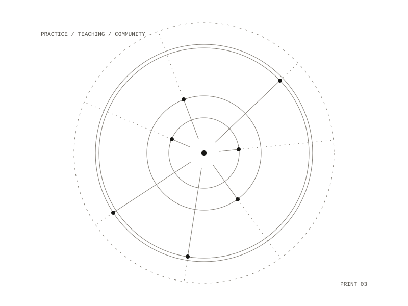

09 / project
The Surregional Sangha Manifesto
A speculative praxis for an anarchic spiritual community
A manifesto for an anarchic spiritual community, written for a collection in honor of the philosopher John Clark.

The piece
It began as an essay on how spirit, the non-material forces in a life, organizes community as part of organizing the self, in the work of John Clark and Joel Kovel. It became a speculative praxis: Clark's work and its influences set beside Zen, the Dao De Jing, Qi Gong's microcosmic orbit and the Buddhist sangha, the community that practices together.
Published in
A collection in honor of John Clark
Charles H. Kerr, forthcoming 2026
A collection in honor of John Clark
Charles H. Kerr, forthcoming 2026